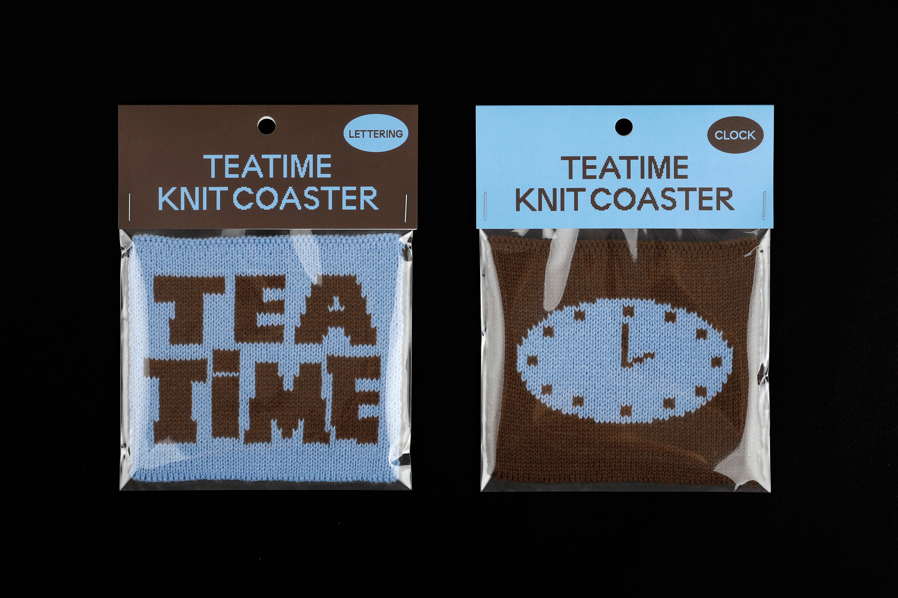
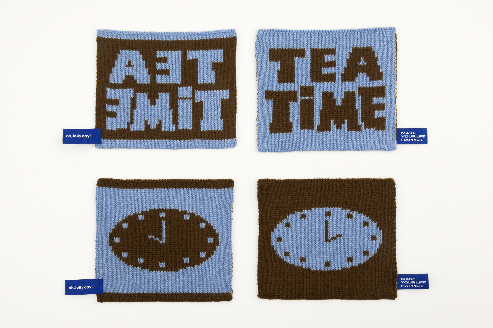
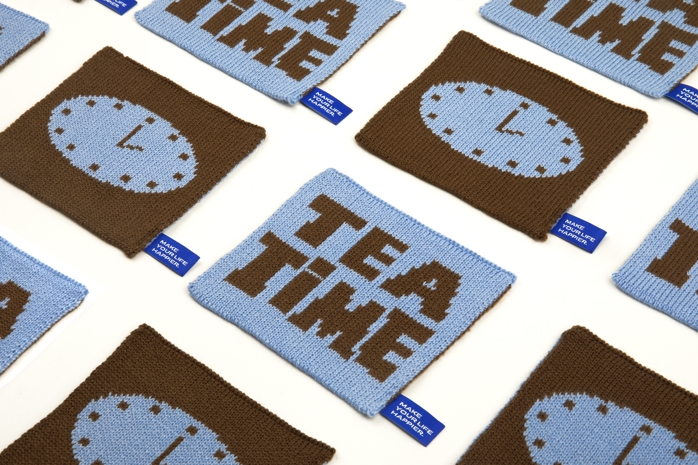
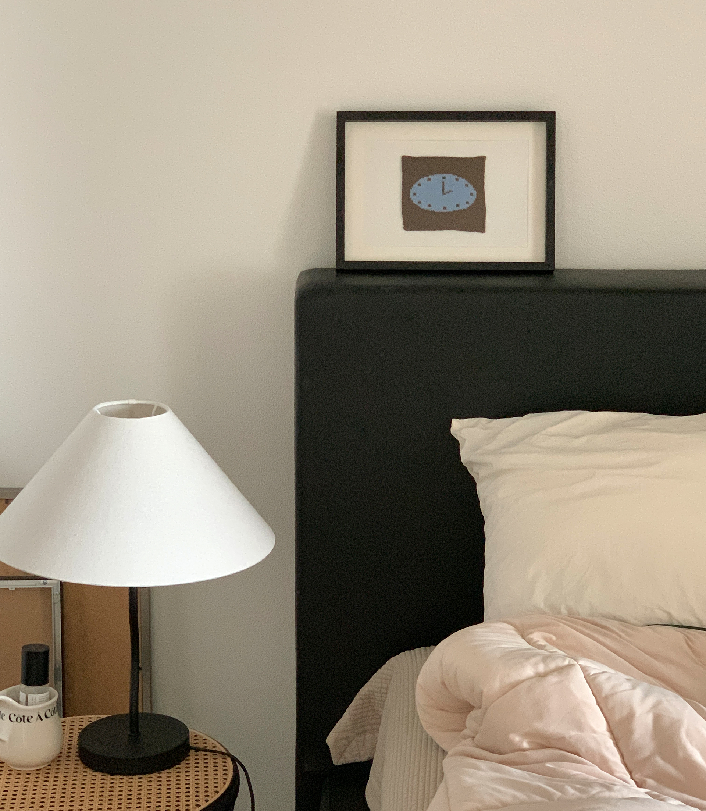
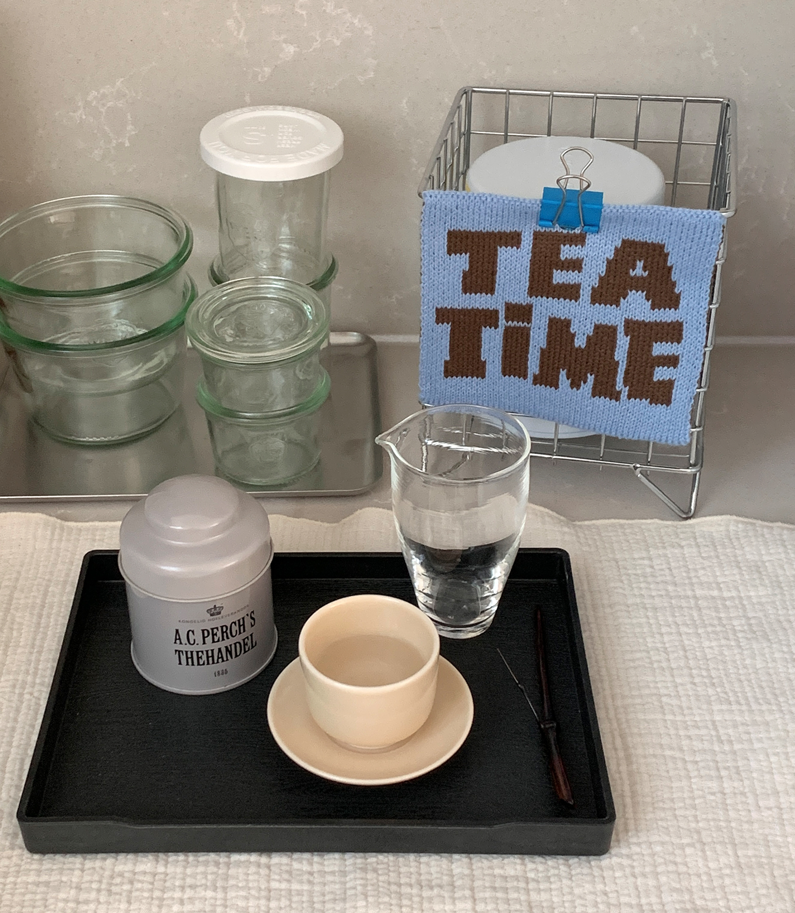
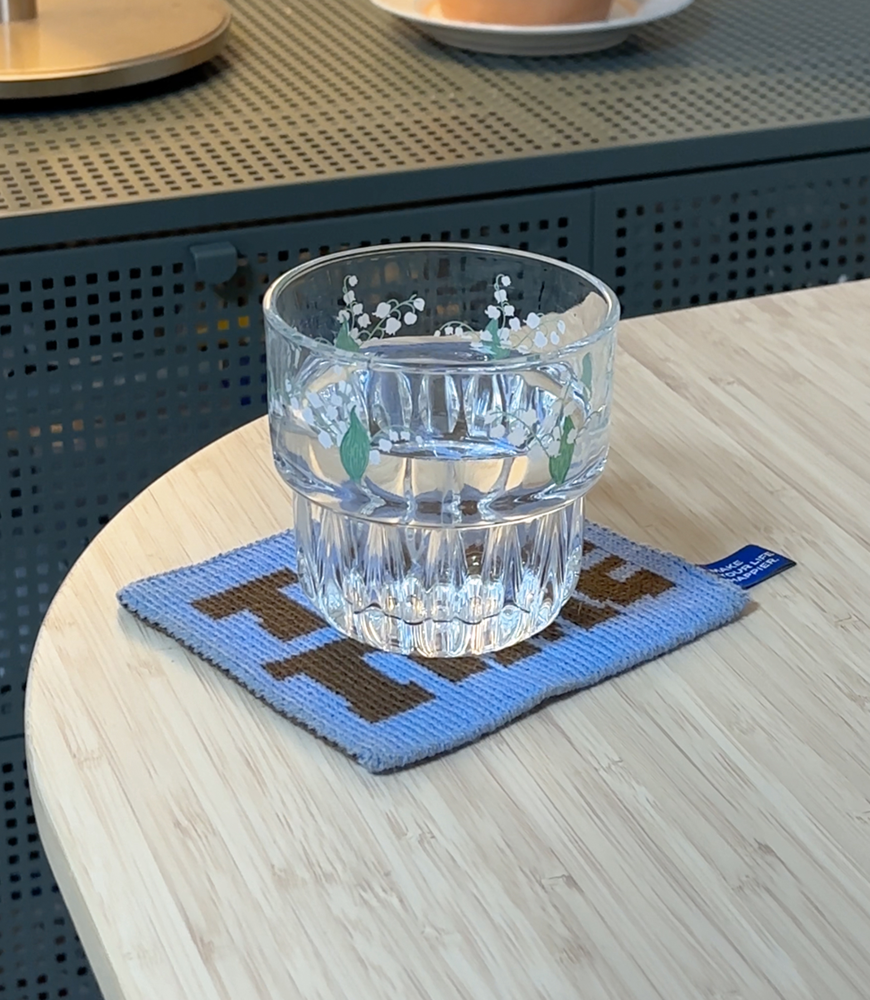
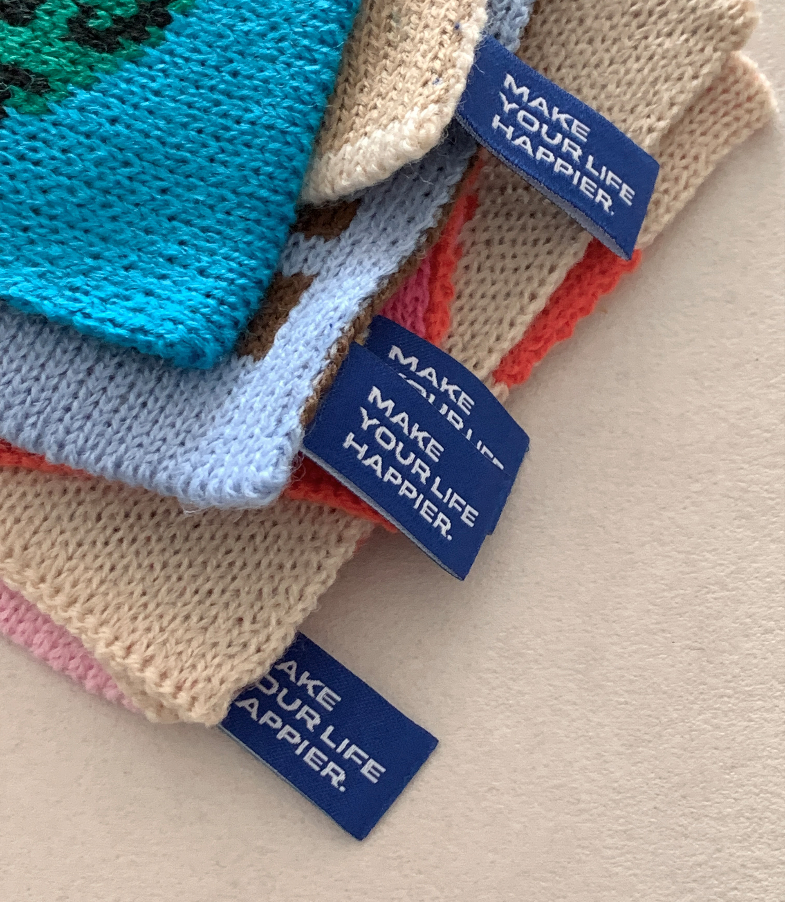
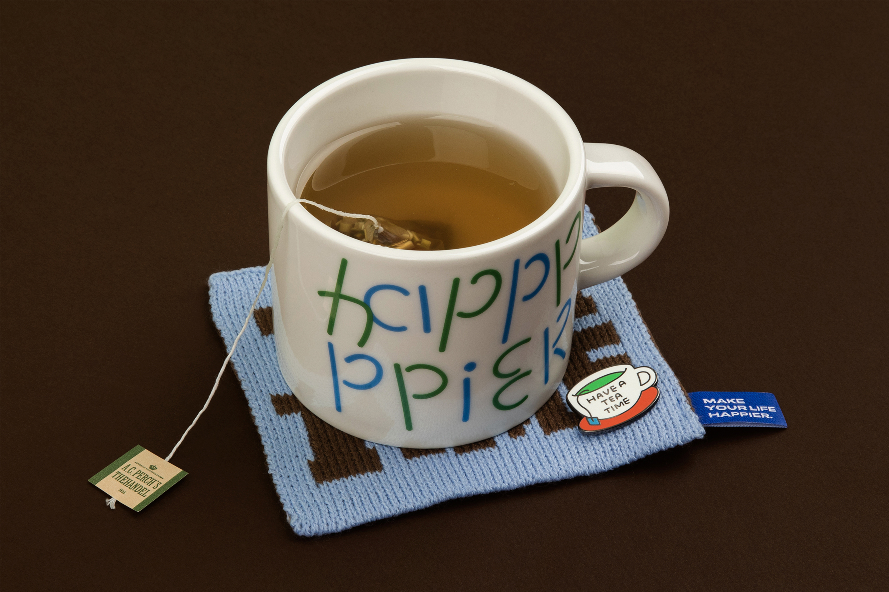

Teatime knit coaster
‘티타임 니트 코스터’는 나만의 온전한 휴식 시간을 위한 컵받침 2종이며, 티타임 시간을 나타낸 시계와 ’Teatime’ 레터링으로 구성되어 있습니다. 시계 앞면의 오전 10시는 아침을 시작하며 가지는 티타임 시간을, 뒷면의 오후 2시는 점심 먹고 나른함을 이겨내기 위해 가지는 티타임 시간을 나타냅니다. 티코스터에 부착된 블루 라벨 택은 디자인적 포인트이면서 고리 형태로 제작되어 어디든 쉽게 걸어 말릴 수 있습니다. 티타임을 가지며 차분하고 조용한 나만의 시간을 가져보세요.
‘Teatime Knit Coaster’ is a pair of coaster for a full break time of your own, consisting of a clock that shows teatime and lettering. The 10 a.m. on the front of the clock represents the tea time you have at the beginning of the morning, and the 2 p.m. on the back represents the tea time you have at lunch to beat the drowsiness. The blue label tag on the tea coaster is a design point and is looped to make it easy to hang and dry anywhere. Take your tea time and have your own calm and quiet time.
‘Teatime Knit Coaster’ is a pair of coaster for a full break time of your own, consisting of a clock that shows teatime and lettering. The 10 a.m. on the front of the clock represents the tea time you have at the beginning of the morning, and the 2 p.m. on the back represents the tea time you have at lunch to beat the drowsiness. The blue label tag on the tea coaster is a design point and is looped to make it easy to hang and dry anywhere. Take your tea time and have your own calm and quiet time.






